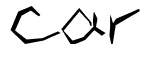

AMG cloud è il marchio per i servizi Cloud di Aruba S.p.A. nel mercato europeo. E' stato creato con lo scopo di fornire una gamma completa di servizi Cloud per rispondere alle esigenze delle aziende, qualunque sia il loro progetto. Sviluppare un'Infrastruttura Virtuale, archiviare e condividere dati, predisporre a funzionalità di disaster recovery, esternalizzare i backup o anche sviluppare un'offerta SaaS dal proprio software… i prodotti sono una pagina bianca su cui i nostri clienti possono realizzare le loro idee. L'impegno di Aruba Cloud si basa su 2 fattori principali:
Infrastruttura e dati nel luogo in cui si trovano i tuoi clienti
Il gruppo sta sviluppando una forte rete europea con già 4 Data Center di proprietà in Italia e in Repubblica Ceca, completata con una rete di Data Center partner in Francia, Regno Unito, Germania e Polonia. I nostri data center sono stati progettati per garantire la massima affidabilità: ridondanza di tutte le fonti di energia e dei sistemi di raffreddamento, massima sicurezza delle nostre strutture, ridondanza delle connessioni di rete e il massimo della professionalità dei nostri esperti. Un approccio libero al mondo di Cloud Computing Le nostre soluzioni permettono ai nostri clienti di scegliere quale tecnologia di virtualizzazione utlizzare, dove installare i propri server virtuali e cosa installarci… tutto questo tramite un singolo pannello di controllo e API pubbliche.


AMG cloud ospita i propri server e dispositivi in data center dotati delle più moderne e migliori attrezzature trovate sul mercato. I nostri team IT localizzati garantiscono il corretto funzionamento del sistema permettendoci di fornire ai clienti servizi a livello enterprise con un’assistenza localizzata in base al paese di provenienza. Per garantire una massima resilienza, collaboriamo con i migliori provider di hardware e software del mondo. DELL per i nostri server, EqualLogic e NetApp per il nostro data storage, Cisco e Nexus per i nostri dispositivi di rete…
Tutto a cura di:
